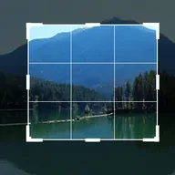

کراپ

لیئر کے کنارے کاٹتا ہے: بائیں، اوپر، دائیں اور نیچے بتاتے ہیں کہ لیئر کی اپنی چوڑائی یا اونچائی کا کتنا حصہ ہر طرف جاتا ہے، گولائی کونوں کو گول کرتی ہے اور فیدر کناروں کو نرم کرتا ہے۔ لیئر اپنی جگہ پر رہتا ہے۔
سیٹنگز
| سیٹنگ | قسم | رینج | ڈیفالٹ |
|---|---|---|---|
| بائیں | نمبر | 0% سے 100% تک | 0% |
| اوپر | نمبر | 0% سے 100% تک | 0% |
| دائیں | نمبر | 0% سے 100% تک | 0% |
| نیچے | نمبر | 0% سے 100% تک | 0% |
| گولائی | نمبر | 0% سے 100% تک | 0% |
| فیدر | نمبر | 0 سے 100 تک | 0 |